1
 Power BI
Power BI Qlik Cloud
Qlik Cloud Looker Studio
Looker Studio SQL Server
SQL Server
Descoberta
Contexto e objetivoCompreensão do problema, da decisão a melhorar, dos utilizadores envolvidos e do resultado esperado.
Data & Analytics
Patrones Lab é um laboratório de análise de dados aplicado a fenómenos reais do quotidiano.
Aqui são desenvolvidos projetos independentes com dados públicos, com foco em detetar padrões, descrever comportamentos e comunicar resultados com contexto.
O objetivo é formular perguntas, preparar dados, construir análises claras e gerar resultados visuais.
Sou Malcolm Di Pietro Cagliari atuário e profissional de Data & Analytics. O meu percurso combina Business Intelligencereporting corporativo, modelação de dados e análise preditiva, com experiência em setores como banca, seguros e transporte aéreo.
Especializo-me em ligar necessidades de negócio a soluções baseadas em dados: definir KPIsestruturar informação, construir dashboards e desenvolver modelos que ajudem a compreender melhor o que acontece e a tomar decisões com mais contexto.
Compreensão do problema, da decisão a melhorar, dos utilizadores envolvidos e do resultado esperado.
Identificação das fontes disponíveis, da sua origem, atualização, fiabilidade e principais limitações.
Organização, limpeza e combinação de dados para construir uma base consistente e utilizável.
Desenvolvimento da análise, do modelo ou do dashboard necessário de acordo com o objetivo definido.
Revisão da coerência, estabilidade e alinhamento dos resultados com a realidade do negócio.
Documentação do trabalho final, automatização de processos recorrentes e incorporação de feedback para melhorias futuras.
Seleção de projetos aplicados com dados públicos, metodologia e resultados visuais. Use os filtros para navegar por disciplina, ferramenta ou tipo de entrega.
Análise do tráfego aéreo em Espanha com dados públicos da AENA, focada em volumes, padrões por aeroporto e diferenças entre categorias.
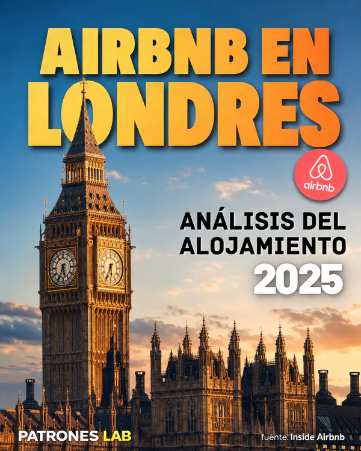
Análise exploratória de Airbnb em Londres para comparar preços, tipos de alojamento, disponibilidade, estadias mínimas e diferenças entre bairros.
Análise de viagens de táxi em Chicago para estudar duração, procura, distribuição geoespacial e padrões operacionais.
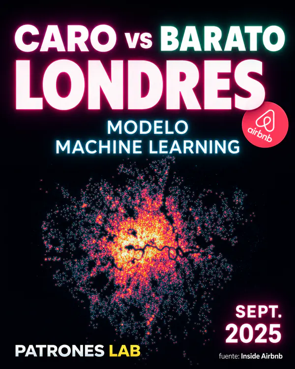
Modelo de classificação com regressão logística para identificar anúncios relativamente caros ou baratos dentro de cada tipo de alojamento.
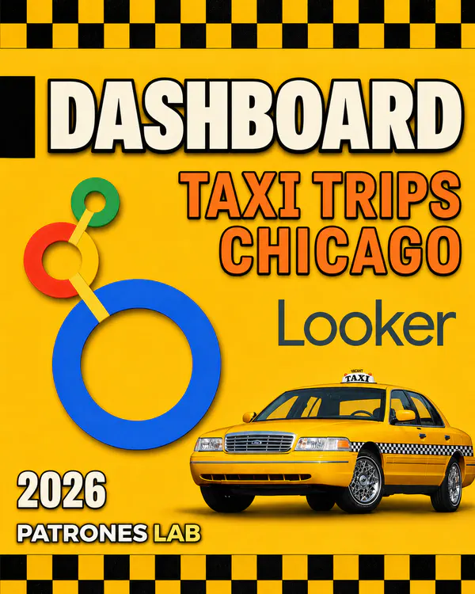
Dashboard interativo em Looker Studio para explorar viagens de táxi em Chicago, indicadores operacionais, padrões horários e percursos de origem-destino.
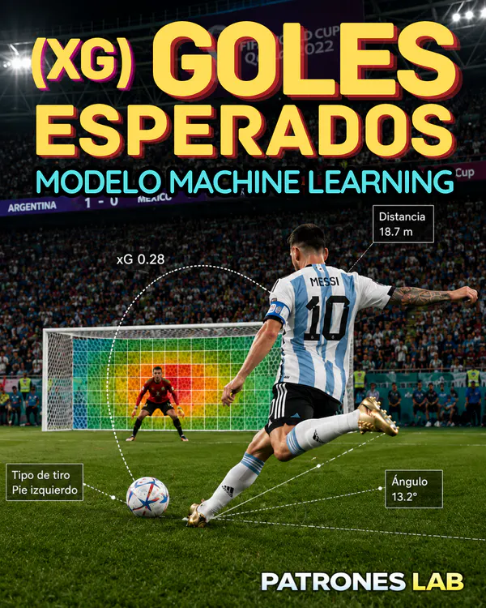
Modelo de regressão logística para estimar a probabilidade de golo de cada remate com dados públicos da StatsBomb, validação por jogo e aplicação ao Mundial Qatar 2022.
Abrir projeto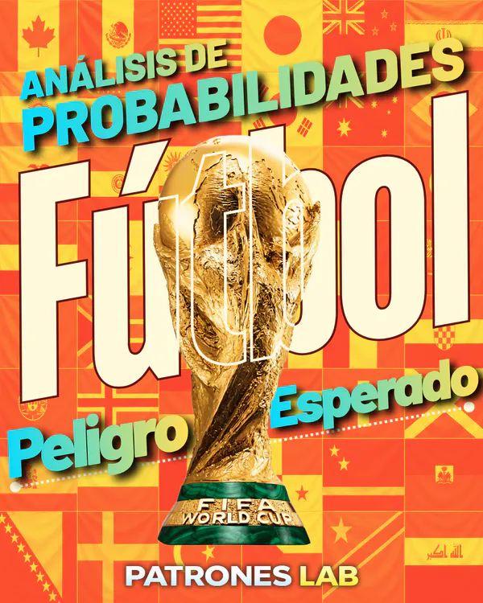
Modelo probabilístico de Perigo Esperado no futebol com dados públicos da StatsBomb. Estima a probabilidade de golo nas próximas 5 jogadas.
✅ publicado
Clustering não supervisionado com K-means para deteção de fraude com cartões de crédito.
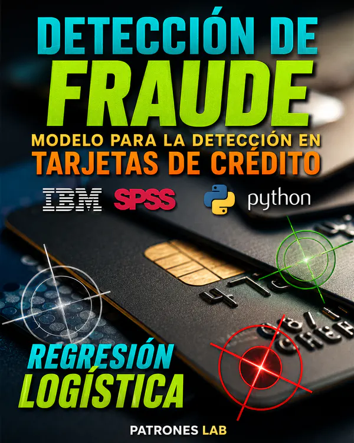
✅ publicado
Classificação supervisionada com regressão logística para deteção de fraude com cartão de crédito.
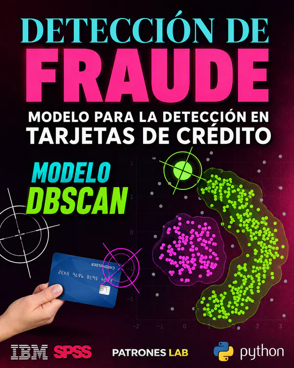
✅ publicado
Clustering não supervisionado com DBSCAN para identificar possíveis fraudes com cartão de crédito.
Abrir projetoAnálise das estatísticas do Mundial 2022 com dados públicos da StatsBomb, orientada a resumir desempenhos individuais e comparar jogadores através de radar de percentis.
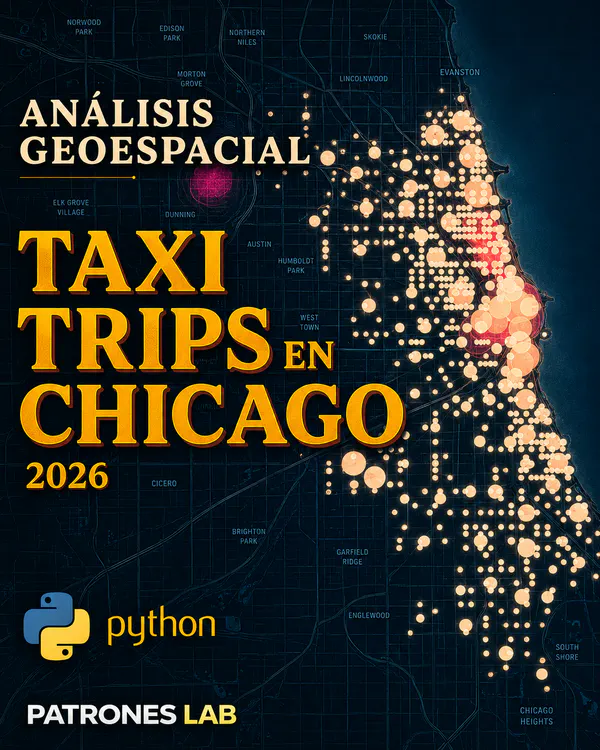
Análise geoespacial de viagens de táxi em Chicago, orientada a detetar zonas de maior atividade, percursos urbanos e concentração territorial da procura.
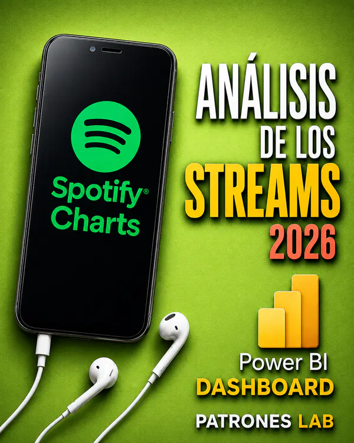
Dashboard interativo em Power BI sobre Spotify Charts para analisar streams, rankings, tendências temporais e distribuição territorial da música.
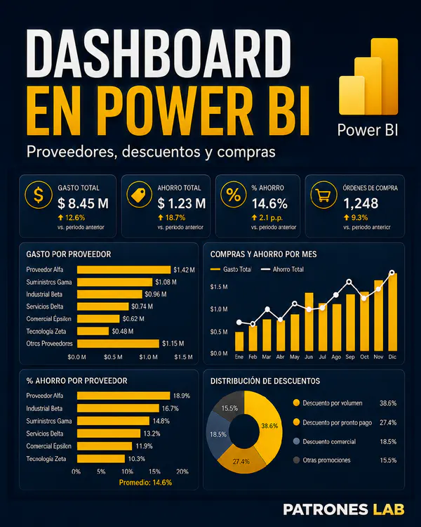
✅ publicado
Relatório interativo em Power BI para analisar despesas com fornecedores, evolução mensal, distribuição por categorias, poupança e distribuição geográfica.
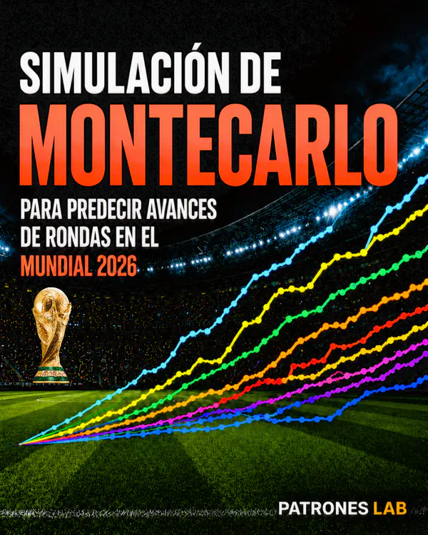
Simulação de um milhão de cenários do Mundial 2026 com ratings Elo para estimar probabilidades de chegar às meias-finais, disputar a final e ser campeão.
Modelo de classificação para estimar danos económicos em eventos meteorológicos, comparando regressão logística com uma rede neuronal.
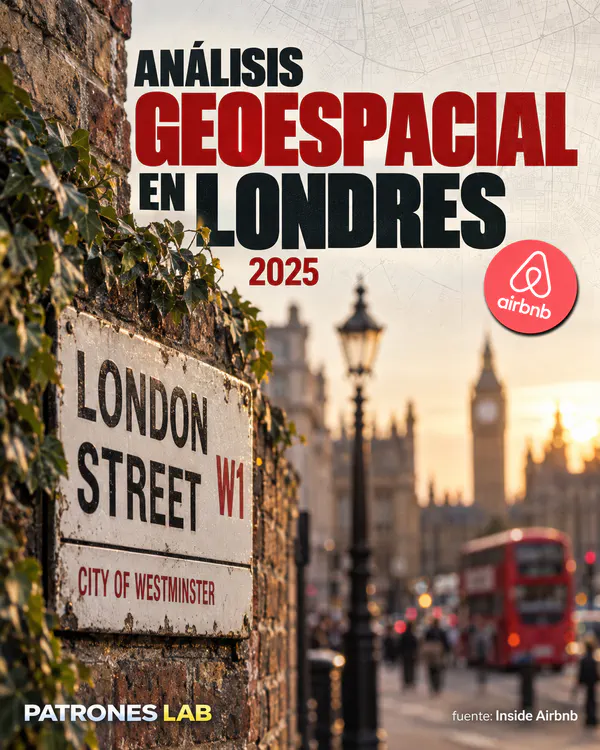
Análise geoespacial dos preços Airbnb em Londres através da distância ao centro, bairros e métricas de vizinhança geográfica.
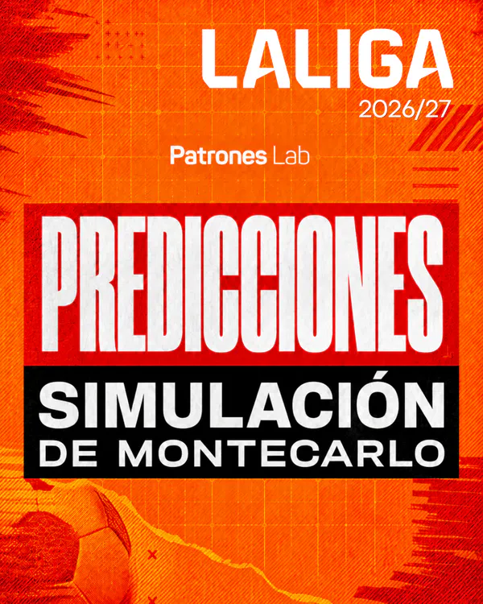
Simulação de um milhão de cenários da LaLiga 2026/27 com ratings Elo para estimar as probabilidades dos principais resultados do campeonato.
Para oportunidades profissionais, colaboração em análise ou projetos de BI · ML · Dashboards.
Escreva-me e responderei em breve.